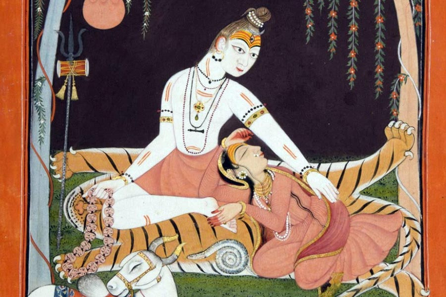
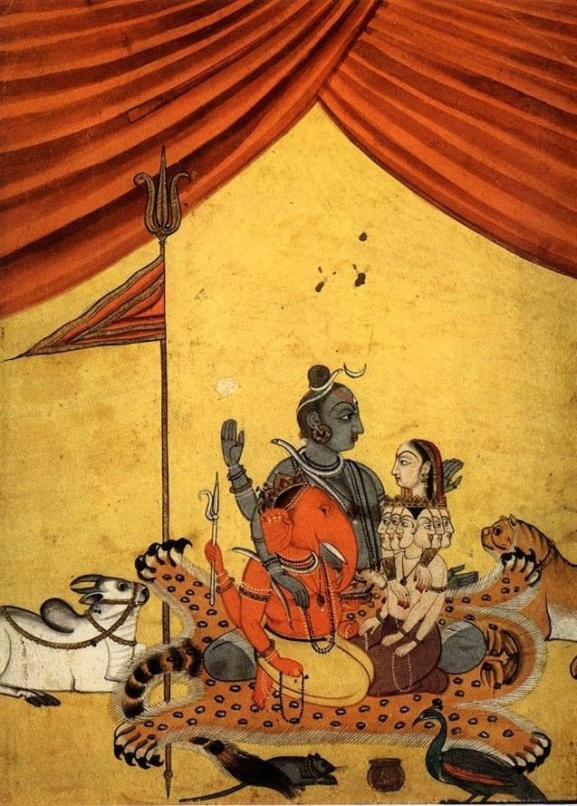

Bhairava and Bhairavi (At the down of Satyayuga)
The Beginning:
In the beginning of Satyuga Lord Śiva appeared in the form of Svacchandanātha. As Svacchandanātha, He appeared with five heads and eighteen arms. His five heads came into manifestation through his five great energies: cit śakti, all consciousness; ānanda śakti, all bliss; icchā śakti, all will; jñāna śakti, all knowledge; and kriyā śakti, all action. And these five energies, which appeared in His five mouths and which are known as īśāna, tatpuruṣa, aghora, vāmadeva and sadyojāta, because of the grace (anugrahaḥ) of Lord Śiva, experienced the sensation of illuminating the Universe.
Svacchandanātha & The Manifestation of 92 Āgama-s:
Lord Śiva wanted to enlighten the universe by manifesting the existence of the Tantras. In order to accomplish this, He manifested these Tantras through his five mouths. Initially, each of these mouths—īśāna, tatpuruṣa, aghora, vāmadeva and sadyojāta—created one Tantra. Then two mouths joined together and created one Tantra from each combination of two mouths. And then three mouths joined together and created one Tantra from each combination of three mouths. And then four mouths joined together, and then five mouths, and these combinations of mouths produced all of the Tantras of our Śaivism.
These Tantras are manifested in three ways. Initially, ten Tantras came into existence which were dualistic (bheda) and are called Śiva Tantras. These Tantras, which are not connected with Kashmir Śaivism, are filled with dualism. Then eighteen Tantras came into existence, which were filled with that thought which is monism cum dualism (bhedābheda). These Tantras are called Rudra Tantras. And finally, these five mouths came into existence in such a way that each and every mouth was simultaneously filled with the other four mouths. Here, four of the five energies were inserted into the fifth energy in such a way that it became full with all five energies. No one energy was in predominance, all were equal. And this happened to each and every energy. Simultaneously, from these mouths came the Bhairava Tantras, which are filled with only monistic thought (abheda). These Bhairava Tantras, which are the Tantras connected with Kashmir Śaivism, are sixty-four in number.
| Āgama-s | State |
|---|---|
| 64 Bairavāgama-s | Parā, Abheda, Brutally Non-dualistic tantras |
| 18 Rudrāgama-s | Parāpara, Bhedābheda, Dualistic cum Non-dualistic tantras |
| 10 Śivāgama-s | Apara, Bheda, Dualistic tantras |
In the Bhairava Tantras, Lord Śiva is shown to be in predominance everywhere. He is there in fullness in Śiva and in all of His energies. He is equally present in everything and everywhere. You cannot say that something is closer to Him and something else is farther away. In everything He is there, fully and completely.
Vākćtuṣtaya-s (States of Speech) & The Transmission of Āgama-s:
Initially, this monistic Tantra, in the form of one Supreme Consciousness and Bliss, was not manifested in will, imagination, or words; rather, it was felt and observed by Lord Śiva Himself at the start of the illuminating energy. At this point, the manifestation of this Tantra resided in Lord Śiva’s innermost speech, known as Parāvāk (supreme speech). In this supreme speech of Lord Śiva, the creation of vācya and vācaka, master and disciple, was not yet felt as being differentiated. They resided in His own Being as undifferentiated. In the next movement of illuminating energy, the manifestation of the Tantras was held in his second speech, paśyantī. At this stage also, these Tantras were still undifferentiated and were one with His Supreme Will. In the next movement of illuminating energy, these Tantras were held in His third speech, madhyamā vāk. Here, they became differentiated and were manifested internally only in thought not in words. And in the final movement of illuminating energy, these Tantras were held in His fourth speech, vaikharī vāk, where they came out through His five mouths in differentiation as words, sentences, and verses.
The Revival of Trika in Kalyug:
In the three yugas (ages), satyuga, tretāyuga, and dvāparayuga, masters and disciples were initiated verbally, not in writing, requiring words and sentences. The power of memory in them was so great that they remembered everything instantaneously. There was no need for them to write anything down or to refer to books and papers. The masters and disciples were very great during these three yugas.
When kaliyuga occurred, these masters and disciples were so disappointed that they hid themselves in unknown places in order to avoid the touch of worldly people living at that time. Because of this, the theory of the Bhairava Tantras and Kashmir Śaivism was lost. Lord Śiva, however, always wishes to illuminate the universe and so He reappeared in this world at Mount Kailāśa, not in the form of Svacchandanātha with five mouths, but in the form of Śrīkaṇṭhanātha. And in the form of Śrīkaṇṭhanātha, He again taught the theory of the Bhairava Tantras to the sage Durvāsā Ṛṣi, who was ūrdhvaretaḥ, which means “one whose power of sex is preserved,” and who was, therefore, a brahmacārī (celibate). When Śrīkaṇṭhanātha initiated him at Mount Kailāśa, Śrīkaṇṭhanātha told him that he was to expand the thought of Bhairava Tantras in all of the universe without restriction to caste, color, or creed. After Śrīkaṇṭhanātha taught Durvāsā Ṛṣi in this manner, he disappeared into the ether.

Śiva Pārvatī Pariwār (Art: Unknown)
The First Parameṣthī Guru of Trikaśāsana - Durvāsā Ṛṣi:
Durvāsā Ṛṣi, after meditating completely to acquire a real and fit disciple for initiation, became disappointed. He could not find anyone in this world fit to be initiated. His initiation was a practical initiation because, while initiating someone in the thought of Bhairava Tantras, he simultaneously initiated him in the practical side of this thought. And this practical initiation manifested itself immediately without the disciples having to do any practice or yoga. This disciple would become instantaneously enlightened. As he could not find a disciple fit for this initiation, he created out of his mental power one mind-born son. This mind-born son was called Tryambakanātha. Durvāsā Ṛṣi completely initiated Tryambakanātha in the way of the monistic Bhairava Tantras. Afterwards, he created two more mind-born sons, Āmardakanātha and Śrīnātha. He initiated his son Āmardakanātha in the dualistic Śiva Tantras and he initiated his other son Śrinātha in the monodualistic Rudra Tantras. All of this was done by Durvāsā Ṛṣi for the upliftment of mankind.

A painting depicting Durvasa
For the upliftment of women, Durvāsā Ṛṣi created one mind-born daughter and she was called Ardhatryambakā. As Kashmir Śaivism does not recognize women to be in a state of degradation, Durvāsā Ṛṣi initiated her completely in the monistic thought of Bhairava Tantras. As this view, that women are not in a state of degradation, is not held by the other two schools of Śaivism, the dualistic and monodualistic schools, Durvāsā Ṛṣi created only one-mind born daughter. His daughter Ardhatryambakā’s teaching is known as the Ardhatryambaka school of the Bhairava Tantras. But as the continuity of the Ardhatryambaka school manifested itself from one woman to another secretly, there is no history of this school in this kaliyuga.
The Unbroken Lineage of Trika:
Durvāsā Ṛṣi’s son Tryambakanātha, the founder of the monistic school of Śaivism, was also a celibate (brahmacārī). According to the way of the sage Durvāsā Ṛṣi, he also created one mind-born son and named him Tryambakāditya, which means “the expansion of Tryambakanātha.” After initiating him completely in Bhairava Tantras, Tryambakanātha entered a cave, which is known as Tryambaka Guhā (cave), and disappeared. Tryambakanātha’s son Tryambakāditya also created one mind-born son and, after initiating him, Tryambakāditya disappeared into the ether.
Pancamukhī Śiva Pārvatī & Nandi alongside Ṛṣabha bull (Art: Unknown)
In this manner fifteen siddhas were created by mind. When, however, the fifteenth siddha attempted to create a mind-born son, he was not successful. It is said that this fifteenth siddha was not fully introverted, but at the same time he was also given to worldly pleasures. Because of this subtle impurity (āṇava mala), he was not successful in creating a mind-born son. After sitting in long meditation, he found in this world a girl with all good qualities and he went to her father and made arrangements to marry her. After marriage, they created one son who was called Saṁgamāditya and who, by his will, came to the valley of Kashmir and found Kailāśa mountain. Saṁgamāditya, like his father, married and produced one son named Varṣāditya, whom he initiated completely in the thought of the monistic Bhairava Tantras. Varṣāditya also married and produced one son, named Aruṇāditya, whom he initiated fully. Aruṇāditya married and created one son named Ānanda, whom he initiated and who was also completely informed practically in Śaivism.
This sage Ānanda was the father of Somānandanātha, the originator of the Pratyabhijñā School of Śaivism and the author of the “Śiva Dṛṣṭi.” Up to the time of Somānandanātha, the initiation into the monistic thought of Bhairava Tantras took place from father to son. From Somānandanātha on, this initiation took place from master to disciple. Somānandanātha was the master of Utpaladeva. Utpaladeva was the master of Lakṣmaṇagupta. And Lakṣmaṇagupta was a master of our great Abhinavagupta, who was in the line of Atrigupta.
Now I will explain to you how this Atrigupta, a great scholar of Kashmir Śaivism, came from India to live in the Kashmir Valley.
During his reign, the king Lalitāditya traveled to India from Kashmir, where in Antarvedi, a tract of land in Madhya Pradesh which lies between the Yamuna and Ganga rivers, he discovered this great Śaiva teacher Atrigupta. Lalitāditya was deeply impressed by the scholarship and practical way of Atrigupta and requested him to accompany him to the Kashmir Valley. Atrigupta agreed and upon reaching Kashmir, was given the old palace of Pravarasena to live in because it was very near to the palace of the king Lalitāditya. After he moved to Kashmir, there was no authority on Kashmir Śaivism left in India. From this time forward, the teaching of the thought of Bhairava Tantras is called Kashmir Śaivism and this teaching has continued to remain centered only in the Kashmir Valley. These Bhairava Tantras are pervasive throughout the whole world.
However, they began in the Kashmir Valley, resided there, and are still alive there today. After some centuries in the house of Atrigupta, Varāhagupta was born. He is the father of Narasiṁhagupta and Narasiṁhagupta is the father of our great Abhinavagupta. Although Abhinavagupta had many disciples, both men and women, his chief disciple was Kṣemarāja and the chief disciple of Kṣemarāja was Yogarāja. After many centuries in the Kashmir Valley, Svāmī Ram came into this physical body. His chief disciple was Svāmī Mahatābakak and my Guru Swāmi Lakṣamaṇa Jū Mahārāj is the disciple of Svāmī Mahatābakak and I am disciple of Swāmi Lakṣamaṇa Jū Mahārāj.
Swāmi Lakṣamaṇa Jū Mahārāj